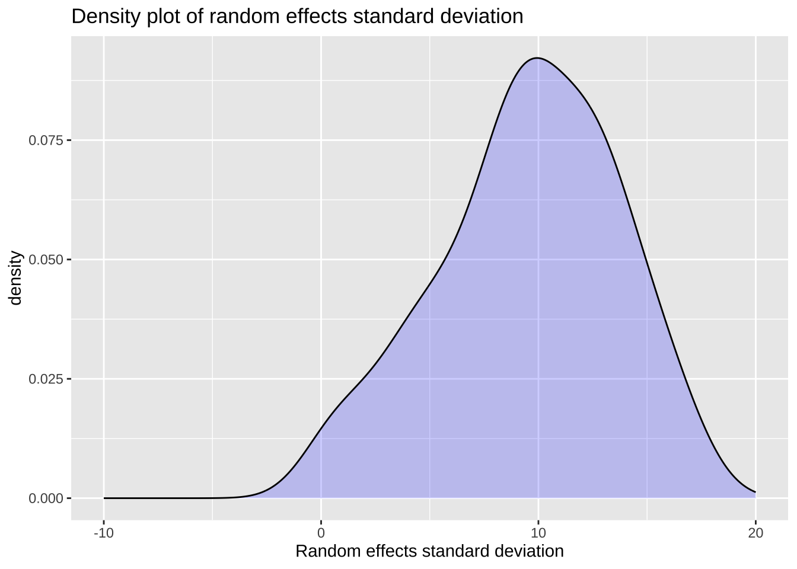

library(tidyverse)
library(ggplot2)
library(faraway)
library(alr4)
library(MASS)
library(knitr)
library(kableExtra)
library(lme4)
library(lmerTest)
library(brms)
# ggplot2 에서 한글의 사용
library(showtext)
font_add_google("Nanum Pen Script", "nanum")
showtext_auto()15 반복측정자료의 모의실험
15.1 필요한 패키지와 함수
15.2 모의실험의 유용성
통계적 모형은 데이터를 분석하여 관심있는 모수에 대한 정보를 얻고 중요한 가설을 검정하는데 사용된다. 이러한 분석 과정에서 다양한 통계적 추론 방법(점추정, 구간추정,통계적 가설검정)이 사용된다.
통계학에서 분석을 위한 새로운 추정 방법이 제안되면 방법의 통계적 특성을 파악하기 위하여 추정량의 이론적 특성과 경험적 특성을 동시에 제시한다. 예를 들어 새로운 통계적 가설 검정법이 제안되면 정확한 또는 점근적 검정력(exact or asymptotic power) 또는 size 등 이론적인 성질(theoritical propooerties)을 통하여 방법의 유효성을 보여준다. 이러한 이론적인 성질이 실제로 표본의 개수가 작거나 모형에 대한 가정의 위배되는 상황이 벌어질 때 자 적절하게 유지되는지 알아보기 위하여 모의실험(simulation)을 통한 경험적 성질(empirical pproperties)도 제시된다.
모의실험 방법은 통계적 방법의 다양한 특성을 경험적으로 파악할 수 있는 도구일뿐만 아니라 복잡한 모형의 구조를 쉽게 이해할 수 있는 도구이기도 한다. 즉, 모형은 데이터가 생성되는 확률적 과정(data generating process)으로 볼 수 있기 때문에 모형을 이용한 모의실험은 자료의 구조적 특성과 확률적 특성을 이해할 수 있는 중요한 도구이다.
15.3 단순회귀 모형의 자료 생성
이제 단순한 선형회귀모형에 대한 모의 실험에 대하여 알아보자.
일단 앞 절에서 사용한 sleepstudy 모형 식 7.10 와 유사한 단순회귀직선에 대한 모의실험을 고혀하자.
아래 모형은 반응시간 \(y\)의 평균이 시간 \(t\)의 선형함수로 나타나는 형태이다.
\[ E(y|t) = \beta_0 + \beta_1 t\] 위의 식만으로는 모의실험을 위한 데이터를 만들 수 없다.
15.3.1 자료 생성 모형
모의실험은 가정한 통계적 모형에서 데이터를 만들수 있는 자세한 데이터의 생성과정에 대한 모형이 필요하다.
이제 시간 \(t\) 에서 반응시간 \(y\) 가 어떻게 생성되는지 아래와 같은구체적인 모형을 고려하자. 아래 모형은 \(n\) 개의 관측값이 모두 독립인 단순회귀직선 모형이다.
\[ y_i = \beta_0 +\beta_1 x_i + e_i, \quad e_i \sim_{iid} N(0, \sigma^2) \quad \text{ for } i=1,2,\dots,n \tag{15.1}\] 위의 식에서 자료를 생성하려면 한 가지 정보가 더 필요하다. 설명변수 \(x\) 가 어떤 범위를 가지는지 혹은 어떤 분포를 가지는지에 대한 정보가 있어야 \(n\) 개의 \((x_i,y_i)\) 데이터를 생성할 수 있다. 보통 설명변수는 다음과 같은 두 형태로 나타난다.
- 설명변수가 실험 계획에 의해 값들이 고정된 경우(주어진 시간, 온도, 무게 등 )
- 설명변수가 확률적 분포를 가진다고 가능할 수 있는 경우(키, 몸무게 등)
15.3.2 자료의 구조
먼저 자료의 구조에 대한 정보를 알아보자.
## 독립변수 측정 시간
x <- unique(sleepstudy$Days)
xp <- length(x)
# 자료의 구조 정보
subj <- unique(sleepstudy$Subject)
np <- length(subj)
# 독립변수
Days <- rep(x,np)
Subject <-rep(subj, each=xp)15.3.3 모수의 결정
자료 생성의 다음단계는 가정된 모형에 관련된 모수의 값을 설정하고 최종적으로 정해야 한다.
앞 장에서 고려한 sleepstudy 자료에서 나타난 모수를 이용하여 모형 식 15.1 에서 모수에 대한 정보를 얻으려고 한다.
mfsim1 <- lm(Reaction ~ 1 + Days , sleepstudy)
summary(mfsim1)
Call:
lm(formula = Reaction ~ 1 + Days, data = sleepstudy)
Residuals:
Min 1Q Median 3Q Max
-110.848 -27.483 1.546 26.142 139.953
Coefficients:
Estimate Std. Error t value Pr(>|t|)
(Intercept) 251.405 6.610 38.033 < 2e-16 ***
Days 10.467 1.238 8.454 9.89e-15 ***
---
Signif. codes: 0 '***' 0.001 '**' 0.01 '*' 0.05 '.' 0.1 ' ' 1
Residual standard error: 47.71 on 178 degrees of freedom
Multiple R-squared: 0.2865, Adjusted R-squared: 0.2825
F-statistic: 71.46 on 1 and 178 DF, p-value: 9.894e-15위의 분석 결과에서 원자료를 모형 식 15.1 을 적합한 결과로 부터 모수의 값을얻는다.
# 모수
## 회귀계수
beta0 <- mfsim1$coefficients[1]
beta1 <- mfsim1$coefficients[2]
## 오차항의 표준편차
s <- sigma(mfsim1)
n <- dim(sleepstudy)[1]15.3.4 자료 생성
이제 원자료로 부터 얻은 정보를 이용하여 데이터를 만들어 보자
set.seed(1234321)
error <- rnorm(n,0,s)
Reaction<- beta0 + beta1*Days + error
sleepstudy_syn <- data.frame(Reaction, Days, Subject)
head(sleepstudy_syn) Reaction Days Subject
1 310.4238 0 308
2 336.3848 1 308
3 360.1166 2 308
4 297.9480 3 308
5 344.4011 4 308
6 249.0607 5 308위에서 만든 새로운 자료는 sleepstudy 자료와 동일한 구조를 가지지만 모든 레코드가 독립적으로 생성된 점이 원자료와 구별되는 큰 차이이다.
mfsim1_1 <- lm(Reaction ~ 1 + Days , sleepstudy_syn)
summary(mfsim1_1)
Call:
lm(formula = Reaction ~ 1 + Days, data = sleepstudy_syn)
Residuals:
Min 1Q Median 3Q Max
-107.927 -33.498 0.485 34.338 114.637
Coefficients:
Estimate Std. Error t value Pr(>|t|)
(Intercept) 246.670 6.280 39.28 <2e-16 ***
Days 12.357 1.176 10.51 <2e-16 ***
---
Signif. codes: 0 '***' 0.001 '**' 0.01 '*' 0.05 '.' 0.1 ' ' 1
Residual standard error: 45.33 on 178 degrees of freedom
Multiple R-squared: 0.3827, Adjusted R-squared: 0.3792
F-statistic: 110.3 on 1 and 178 DF, p-value: < 2.2e-16ggplot(sleepstudy_syn, aes(x=Days, y=Reaction)) + geom_point(size=0.7)ggplot(sleepstudy_syn, aes(x=Days, y=Reaction)) +
geom_point(size=0.5) +
stat_smooth(method = "lm",se=F,linewidth=0.5)+
facet_wrap("Subject", labeller = label_both)+
theme_bw() `geom_smooth()` using formula = 'y ~ x'위의 그림에서 알수 있듯이 모든 관측치가 독립이고 개인차에 대한 임의효과를 고려하지 않은 모형이기 떄문에 생성된 자료에서 개체별(Subject)로 절편과 기울기가 유사하다.
만약 위와 같이 독립적으로 자료에 선형혼합모형을 적합시키면 어떤 결과가 나타날까?
mfsim1_wrong <- lmer(Reaction ~ 1 + Days + (1+Days|Subject) , sleepstudy_syn)boundary (singular) fit: see help('isSingular')summary(mfsim1_wrong)Linear mixed model fit by REML. t-tests use Satterthwaite's method [
lmerModLmerTest]
Formula: Reaction ~ 1 + Days + (1 + Days | Subject)
Data: sleepstudy_syn
REML criterion at convergence: 1874
Scaled residuals:
Min 1Q Median 3Q Max
-2.44838 -0.70648 0.00083 0.74218 2.43218
Random effects:
Groups Name Variance Std.Dev. Corr
Subject (Intercept) 212.5 14.577
Days 1.4 1.183 -1.00
Residual 1962.0 44.295
Number of obs: 180, groups: Subject, 18
Fixed effects:
Estimate Std. Error df t value Pr(>|t|)
(Intercept) 246.670 7.033 22.941 35.07 < 2e-16 ***
Days 12.357 1.183 68.185 10.45 8.59e-16 ***
---
Signif. codes: 0 '***' 0.001 '**' 0.01 '*' 0.05 '.' 0.1 ' ' 1
Correlation of Fixed Effects:
(Intr)
Days -0.830
optimizer (nloptwrap) convergence code: 0 (OK)
boundary (singular) fit: see help('isSingular')15.4 선형 혼합 모형의 자료 생성
이제 다음과 같이 각 개체별로 절편과 기울기가 다른 선형혼합 모형에서 생성된 자료를 만들어 보자.
\[ y_{ij} = (\beta_0 + b_{0i}) + (\beta_1 + b_{1i}) t_j + e_{ij}, \quad \text{ for } i=1,2,\dots,I, ~~ j=1,2,\dots,J \]
\[ e_{ij} \sim_{iid} N(0, \sigma^2), \quad {\pmb b}_i = \begin{bmatrix} b_{0i} \\ b_{1i} \\ \end{bmatrix} \sim N \left ( \begin{bmatrix} 0 \\ 0 \\ \end{bmatrix} , \begin{bmatrix} \sigma^2_{b1} & \rho \sigma_{b1} \sigma_{b2}\\ \rho \sigma_{b1} \sigma_{b2} & \sigma^2_{b2} \\ \end{bmatrix} \right ), \quad \text{ for } i=1,2,\dots,I, ~~ j=1,2,\dots,J \tag{15.2}\]
15.4.1 자료의 구조
먼저 자료의 구조는 원자료와 동일한 정보를 사용한다.
## 독립변수 측정 시간
x <- unique(sleepstudy$Days)
xp <- length(x)
# 자료의 구조 정보
subj <- unique(sleepstudy$Subject)
np <- length(subj)
# 독립변수
Days <- rep(x,np)
Subject <-rep(subj, each=xp)15.4.2 모수의 결정
임의효과를 생성하기 위해서는 각 분산성분에 대한 모수의 값이 필요하므로 원자료 sleepstudy 에서 추정된 분산성분의 값들을 이용하여 자료를 생성해 보자.
fm1 <- lmer(Reaction ~ 1 + Days + (1 + Days|Subject), sleepstudy)
summary(fm1)Linear mixed model fit by REML. t-tests use Satterthwaite's method [
lmerModLmerTest]
Formula: Reaction ~ 1 + Days + (1 + Days | Subject)
Data: sleepstudy
REML criterion at convergence: 1743.6
Scaled residuals:
Min 1Q Median 3Q Max
-3.9536 -0.4634 0.0231 0.4634 5.1793
Random effects:
Groups Name Variance Std.Dev. Corr
Subject (Intercept) 612.10 24.741
Days 35.07 5.922 0.07
Residual 654.94 25.592
Number of obs: 180, groups: Subject, 18
Fixed effects:
Estimate Std. Error df t value Pr(>|t|)
(Intercept) 251.405 6.825 17.000 36.838 < 2e-16 ***
Days 10.467 1.546 17.000 6.771 3.26e-06 ***
---
Signif. codes: 0 '***' 0.001 '**' 0.01 '*' 0.05 '.' 0.1 ' ' 1
Correlation of Fixed Effects:
(Intr)
Days -0.138이제 분산성분에 대한 정보를 얻기 위하여 VarCorr 함수를 이용하여 다음과 같이 분산성분에 대한 정보를 얻을 수 있다.
vc_df <- data.frame(VarCorr(fm1))
vc_df grp var1 var2 vcov sdcor
1 Subject (Intercept) <NA> 612.100158 24.74065800
2 Subject Days <NA> 35.071714 5.92213766
3 Subject (Intercept) Days 9.604409 0.06555124
4 Residual <NA> <NA> 654.940008 25.59179572위의 결과로 부터 다음과 같이 모수의 값을 얻을 수 있다. getME 함수는 lmer 모형의 결과로 부터 모수의 값을 얻기 위한 함수이다.
beta0 <- getME(fm1, "fixef")['(Intercept)']
beta1 <- getME(fm1, "fixef")['Days']
s0 <- vc_df %>% dplyr::filter(grp== 'Subject') %>% dplyr::filter(var1 == '(Intercept)') %>% dplyr::filter( is.na(var2)) %>% dplyr::select(sdcor) %>% as.numeric()
s1 <- vc_df %>% dplyr::filter(grp== 'Subject') %>% dplyr::filter(var1 == 'Days') %>% dplyr::filter( is.na(var2)) %>% dplyr::select(sdcor) %>% as.numeric()
rho <- vc_df %>% dplyr::filter(grp== 'Subject') %>% dplyr::filter(var1 == '(Intercept)') %>% dplyr::filter( var2 == 'Days') %>% dplyr::select(sdcor) %>% as.numeric()
s_new <- vc_df %>% dplyr::filter(grp== 'Residual') %>% dplyr::select(sdcor) %>% as.numeric()
c(beta0, beta1, s0,s1,rho,s_new) (Intercept) Days
251.40510485 10.46728596 24.74065800 5.92213766 0.06555124 25.59179572 15.4.3 자료의 생성
이제 다변량 정규분포에서 임의효과를 생성하기 위하여 mvrnorm 함수를 이용하여 임의효과를 생성하는 함수를 만들어 보자.
r_bi_norm <- function(ns, mean_vector, std1, std2, rho) {
# Construct the covariance matrix
covariance_matrix <- matrix(c(std1^2, rho*std1*std2,
rho*std1*std2, std2^2),
nrow = 2)
# Generate one sample (n=1) of the bivariate distribution
random_vector <- mvrnorm(n = ns, mu = mean_vector, Sigma = covariance_matrix)
return(random_vector)
}이제 위의 함수 r_bi_norm 을 이용하여 임의효과를 생성해 보자.
ran_effs <- r_bi_norm(np, mean_vector = c(0,0), std1 = s0, std2 = s1, rho = rho)
ran_effs [,1] [,2]
[1,] 30.108338 -0.9355999
[2,] 17.504742 -4.6341232
[3,] -1.330282 7.5845073
[4,] 3.358948 16.1184479
[5,] 4.231729 -0.4456519
[6,] 3.289291 4.0881619
[7,] -26.682068 -0.9959717
[8,] -8.854692 4.9162480
[9,] 36.497594 -0.7459951
[10,] 14.362823 -0.9640035
[11,] 12.526351 -6.9512455
[12,] 14.023122 2.2740462
[13,] -53.009525 10.9097123
[14,] -8.929866 -1.6975231
[15,] 1.884529 -1.9111229
[16,] 4.931168 -3.1983164
[17,] 55.498306 9.0992849
[18,] 4.768608 -8.3479651이제 임의효과를 이용하여 자료를 생성해 보자. 각 개체별로 절편과 기울기가 다른 선형혼합 모형에서 생성된 자료를 만들어 보자.
set.seed(32123)
error_new <- rnorm(n,0,s_new)
Reaction <- (beta0 + rep(ran_effs[,1],each=xp)) + (beta1 + rep(ran_effs[,2],each=xp)) * Days + error_new
sleepstudy_syn2 <- data.frame(Reaction, Days, Subject)
head(sleepstudy_syn2) Reaction Days Subject
1 270.3672 0 308
2 292.2138 1 308
3 273.1029 2 308
4 326.6899 3 308
5 303.9597 4 308
6 359.8793 5 308이제 새로 생성한 자료를 이용하여 다음과 같이 선형혼합모형을 적합해 보자.
fm1_1 <- lmer(Reaction ~ 1 + Days + (1 + Days|Subject), sleepstudy_syn2)
summary(fm1_1)Linear mixed model fit by REML. t-tests use Satterthwaite's method [
lmerModLmerTest]
Formula: Reaction ~ 1 + Days + (1 + Days | Subject)
Data: sleepstudy_syn2
REML criterion at convergence: 1760.2
Scaled residuals:
Min 1Q Median 3Q Max
-2.65295 -0.60321 -0.01403 0.59278 2.23300
Random effects:
Groups Name Variance Std.Dev. Corr
Subject (Intercept) 725.50 26.935
Days 66.68 8.166 -0.37
Residual 692.66 26.318
Number of obs: 180, groups: Subject, 18
Fixed effects:
Estimate Std. Error df t value Pr(>|t|)
(Intercept) 254.919 7.321 17.004 34.820 < 2e-16 ***
Days 11.548 2.042 17.001 5.654 2.86e-05 ***
---
Signif. codes: 0 '***' 0.001 '**' 0.01 '*' 0.05 '.' 0.1 ' ' 1
Correlation of Fixed Effects:
(Intr)
Days -0.441ggplot(sleepstudy_syn2, aes(x=Days, y=Reaction)) + geom_point(size=0.7)ggplot(sleepstudy_syn2, aes(x=Days, y=Reaction)) +
geom_point(size=0.5) +
stat_smooth(method = "lm",se=F,linewidth=0.5)+
facet_wrap("Subject", labeller = label_both)+
theme_bw() `geom_smooth()` using formula = 'y ~ x'15.5 함수를 이용한 자료의 생성
이제 sleepstudy 와 유사한 구조를 가지는 자료를 생성하는 함수를 만들어 보자.
## 자료의 생성 함수
## num_subjec : 개체의 수
## time_vec : 시간 벡터
## beta0 : 선형 함수의 절편
## beta1 : 선형 함수의 기울기
## s0 : 절편 임의효과의 표준편차
## s1 : 기울기 임의효과의 표준편차
## rho : 두 임의 효과의 상관계수
## s : 오차항의 표준편차
make_sim_data <- function( num_subject, time_vec, beta0, beta1, s0, s1, rho, s, myseed= 123411) {
# random number generation 초기값
set.seed(myseed)
# 자료의 구조 정보
## 시간의 길이
xp <- length(time)
## 개체의 ID
subj <- as.character(1:num_subject)
Subject <-rep(subj, each=xp)
## 개체의 수
np <- length(subj)
# 독립변수
## 시간
Days <- rep(time,np)
# 임의효과 생성
ran_effs <- r_bi_norm(np, mean_vector = c(0,0), std1 = s0, std2 = s1, rho = rho)
# 오차항 생성
error <- rnorm(np*xp,0,s)
# 반응변수 생성
Reaction <- (beta0 + rep(ran_effs[,1],each=xp)) + (beta1 + rep(ran_effs[,2],each=xp)) * Days + error
# 자료의 구조 생성
sleepstudy_syn <- data.frame(Reaction, Days, Subject)
return(sleepstudy_syn)
}이제 자신이 정한 저료의 구조와 모수를 이용하여 자료를 생성해 보자.
num_subject <- 10
time <- 0:5
beta0 <- 100
beta1 <- 5
s0 <- 10
s1 <- 5
rho <- -0.4
s <- 10
new_data <- make_sim_data(num_subject, time, beta0, beta1, s0, s1, rho, s)
head(new_data) Reaction Days Subject
1 104.6845 0 1
2 127.8396 1 1
3 105.4228 2 1
4 110.5512 3 1
5 115.4780 4 1
6 114.6757 5 1이제 새로운 자료를 이용하여 선형혼합모형을 적합해 보자.
fm1_new <- lmer(Reaction ~ 1 + Days + (1 + Days|Subject), new_data)
summary(fm1_new)Linear mixed model fit by REML. t-tests use Satterthwaite's method [
lmerModLmerTest]
Formula: Reaction ~ 1 + Days + (1 + Days | Subject)
Data: new_data
REML criterion at convergence: 472.8
Scaled residuals:
Min 1Q Median 3Q Max
-2.60496 -0.28530 0.05965 0.51495 2.04955
Random effects:
Groups Name Variance Std.Dev. Corr
Subject (Intercept) 76.98 8.774
Days 24.71 4.971 -0.27
Residual 99.98 9.999
Number of obs: 60, groups: Subject, 10
Fixed effects:
Estimate Std. Error df t value Pr(>|t|)
(Intercept) 94.780 3.596 9.000 26.354 7.88e-10 ***
Days 3.199 1.744 9.000 1.834 0.0998 .
---
Signif. codes: 0 '***' 0.001 '**' 0.01 '*' 0.05 '.' 0.1 ' ' 1
Correlation of Fixed Effects:
(Intr)
Days -0.41315.6 모의실험
이제 위에서 고려한 자료의 구조와 모수를 이용하여 모의실험을 해 보자.
모의실험의 목적은 다양하게 있을 수 있다. 먼저 절편에 대한 임의효과의 분산성분이 어떻게 추정되는지 알아보자.
모의실험의 횟수는 100으로 하자.
아래 코드에서 모의실험의 각 단계에서 생성된 자료를 이용하여 선형혼합모형을 적합하고 그 결과를 sim_result 에 저장한다. 각 던계에서 random number 의 초기값을 다르게 하기 위하여 myseed 를 i 로 지정하였다.값을 지정하지 않으면 myseed 는 123411 로 고정되어 같은 자료가 반복된다.
Nsim <- 100
sim_result <- 1:Nsim
num_subject <- 10
time <- 0:5
beta0 <- 100
beta1 <- 5
s0 <- 10
s1 <- 5
rho <- -0.4
s <- 10
for (i in 1:Nsim){
new_data <- make_sim_data(num_subject, time, beta0, beta1, s0, s1, rho, s, myseed= i)
fm_sim <- lmer(Reaction ~ 1 + Days + (1 + Days|Subject), new_data)
vc_df <- as.data.frame(VarCorr(fm_sim))
sim_result[i] <- vc_df %>% dplyr::filter(grp== 'Subject') %>%
dplyr::filter(var1 == '(Intercept)') %>%
dplyr::filter( is.na(var2)) %>%
dplyr::select(sdcor) %>%
as.numeric()
}boundary (singular) fit: see help('isSingular')
boundary (singular) fit: see help('isSingular')Warning: Model failed to converge with 1 negative eigenvalue: -7.3e-01boundary (singular) fit: see help('isSingular')Warning in checkConv(attr(opt, "derivs"), opt$par, ctrl = control$checkConv, :
Model failed to converge with max|grad| = 0.0429527 (tol = 0.002, component 1)Warning in checkConv(attr(opt, "derivs"), opt$par, ctrl = control$checkConv, :
Model failed to converge with max|grad| = 0.00336574 (tol = 0.002, component 1)boundary (singular) fit: see help('isSingular')
boundary (singular) fit: see help('isSingular')
boundary (singular) fit: see help('isSingular')
boundary (singular) fit: see help('isSingular')
boundary (singular) fit: see help('isSingular')
boundary (singular) fit: see help('isSingular')Warning: Model failed to converge with 1 negative eigenvalue: -1.4e-02sim_result [1] 4.5104272 10.7928386 1.2510866 11.2097911 15.8315602 11.0013372
[7] 16.8417848 6.9968852 0.0000000 8.6375532 7.2211732 12.3890737
[13] 8.8479840 9.0583386 12.5977973 12.6849906 9.8448045 17.0851686
[19] 4.8525604 10.3195860 9.2289773 11.2474301 5.6254630 0.7368366
[25] 11.3850486 12.7842622 7.9874688 12.1613683 12.1041299 7.1669089
[31] 15.4452869 7.3236654 10.9178291 4.1892993 9.9788300 8.9754129
[37] 0.2453693 5.2784006 9.3666501 12.0666036 9.6182587 8.1041298
[43] 5.8444702 10.5233360 13.3228895 3.4941746 15.8464350 14.7126852
[49] 9.8815540 11.5058712 11.7672784 11.9355399 9.9171284 13.2954695
[55] 10.1767173 2.5387015 14.7584548 8.9042018 13.9218244 14.2231910
[61] 10.2541862 13.0167785 14.6410595 13.0064790 6.9646687 5.9965459
[67] 7.1727323 3.0830984 8.1308466 9.6908465 7.8681998 2.0979475
[73] 14.0085168 15.6220555 12.3882945 9.0397649 5.3211165 9.7760203
[79] 13.4566586 3.7874034 4.1688551 13.6758526 15.4283062 8.1636770
[85] 8.2791360 5.5697856 9.4299839 12.7644355 14.4888236 6.6387578
[91] 17.1341837 12.8631983 7.6903545 10.2534477 12.2308844 9.6491583
[97] 8.3055860 0.8810941 4.7477393 3.0036543결과를 보면 많은 경고가 나타나는 것을 알 수 있다. 이 경고는 최대가능도 추정법을 이용하여 모수를 추정할 때 최적화 과정에서 발생하는 문제이다.
이제 절편에 대한 임의효과의 분산성분의 추정값의 분포를 살펴보자. 절편에 대한 임의효과의 표준편차는 10으로 설정하였는데 100번의 추정에서 100개의 추정값의 평균값이 실제 모수의 값 10에 가깝게 나타나는 것을 알 수 있다.
결과에서 주의할 점은 절편에 대한 임의효과의 표준편차에 대한 추정값이 0으로 나타나는 경우가 있다는 것이다.
summary(sim_result) Min. 1st Qu. Median Mean 3rd Qu. Max.
0.000 7.124 9.810 9.512 12.620 17.134 boxplot(sim_result)# density plot with ggplot2 with xlim (-10, 20)
ggplot(data.frame(sim_result), aes(x=sim_result)) +
geom_density(fill="blue", alpha=0.2) +
xlim(-10, 20) +
ggtitle("Density plot of random effects standard deviation") +
xlab("Random effects standard deviation")
다음으로 좀 더 추정하기 어려운 두 임의효과의 상관계수에 대한 모의실험을 해 보자. 앞에서 실행한 경과, 즉 절편 임의효과의 표분편차에 대한 추정량도 같이 구해보자.
Nsim <- 100
sim_result <- data.frame(s0 = 1:Nsim, rho = 1:Nsim)
num_subject <- 10
time <- 0:5
beta0 <- 100
beta1 <- 5
s0 <- 10
s1 <- 5
rho <- -0.4
s <- 10
for (i in 1:Nsim){
new_data <- make_sim_data(num_subject, time, beta0, beta1, s0, s1, rho, s, myseed= i)
fm_sim <- lmer(Reaction ~ 1 + Days + (1 + Days|Subject), new_data)
vc_df <- as.data.frame(VarCorr(fm_sim))
sim_result[i,1] <- vc_df %>% dplyr::filter(grp== 'Subject') %>%
dplyr::filter(var1 == '(Intercept)') %>%
dplyr::filter( is.na(var2)) %>%
dplyr::select(sdcor) %>%
as.numeric()
sim_result[i,2] <- vc_df %>% dplyr::filter(grp== 'Subject') %>%
dplyr::filter(var1 == '(Intercept)') %>%
dplyr::filter(var2 == 'Days') %>%
dplyr::select(sdcor) %>%
as.numeric()
}boundary (singular) fit: see help('isSingular')
boundary (singular) fit: see help('isSingular')Warning: Model failed to converge with 1 negative eigenvalue: -7.3e-01boundary (singular) fit: see help('isSingular')Warning in checkConv(attr(opt, "derivs"), opt$par, ctrl = control$checkConv, :
Model failed to converge with max|grad| = 0.0429527 (tol = 0.002, component 1)Warning in checkConv(attr(opt, "derivs"), opt$par, ctrl = control$checkConv, :
Model failed to converge with max|grad| = 0.00336574 (tol = 0.002, component 1)boundary (singular) fit: see help('isSingular')
boundary (singular) fit: see help('isSingular')
boundary (singular) fit: see help('isSingular')
boundary (singular) fit: see help('isSingular')
boundary (singular) fit: see help('isSingular')
boundary (singular) fit: see help('isSingular')Warning: Model failed to converge with 1 negative eigenvalue: -1.4e-02head(sim_result,10) s0 rho
1 4.510427 -0.5514223
2 10.792839 -0.3881303
3 1.251087 1.0000000
4 11.209791 -0.9464929
5 15.831560 -0.8350045
6 11.001337 -0.4460145
7 16.841785 -0.7299049
8 6.996885 -0.2903759
9 0.000000 NaN
10 8.637553 -0.1362379summary(sim_result$rho) Min. 1st Qu. Median Mean 3rd Qu. Max. NA's
-1.0000 -0.6861 -0.4460 -0.3294 -0.1382 1.0000 1 boxplot(sim_result$rho)# density plot with ggplot2 with xlim (-1, 1)
ggplot(data.frame(sim_result), aes(x=sim_result$rho)) +
geom_density(fill="blue", alpha=0.2) +
xlim(-1, 1) +
ggtitle("Density plot of correlation of two random effects") +
xlab("correlation")Warning: Use of `sim_result$rho` is discouraged.
ℹ Use `rho` instead.Warning: Removed 2 rows containing non-finite values (`stat_density()`).